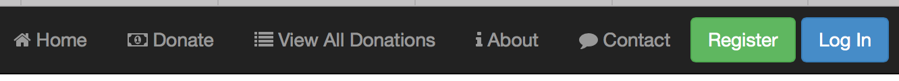
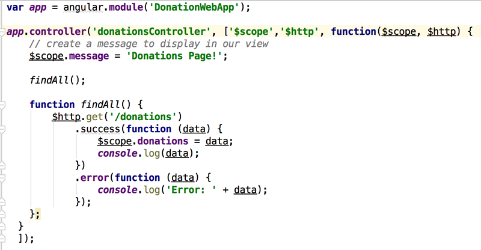
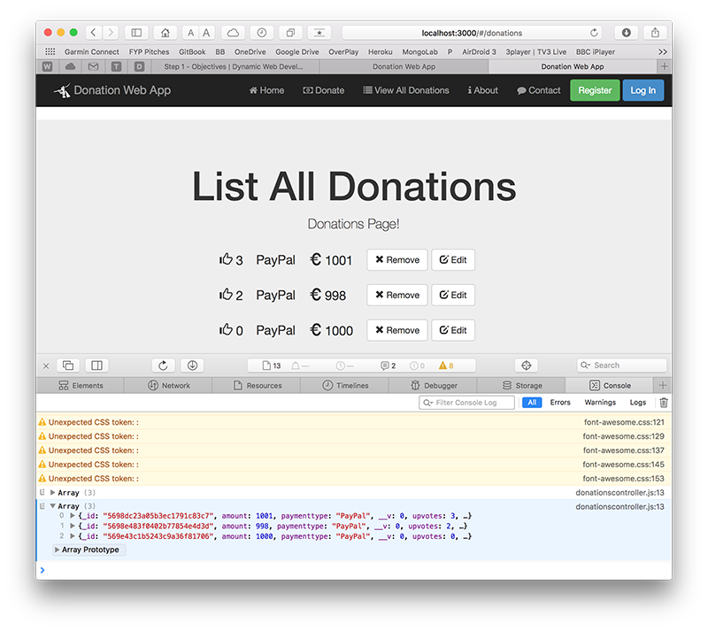
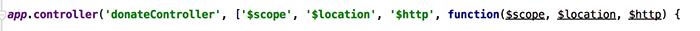
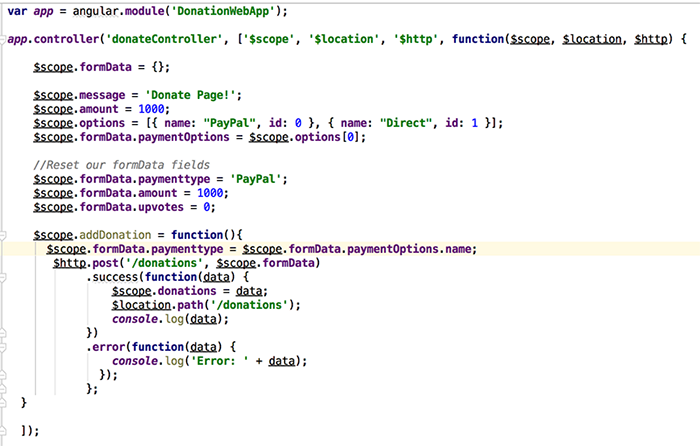
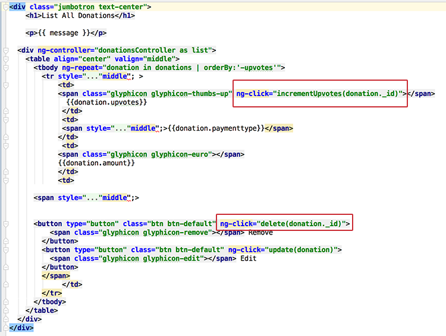
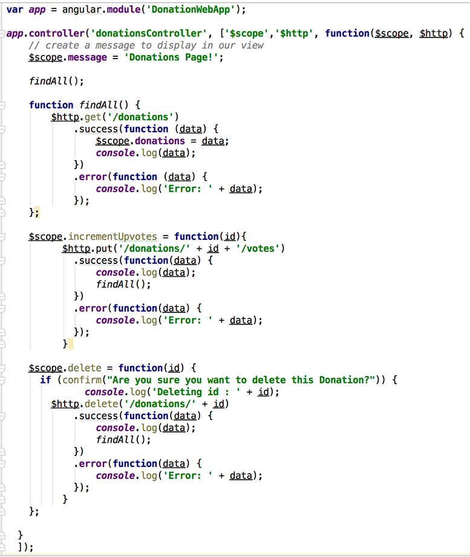

-
Lab 5 - DonationWeb 4.0 (MEAN Web App)
This lab involves adding some proper functionality to our Angular Web App - Donation 4.0.
In this lab we'll add the ability to make a Donation, list all the Donations and be able to delete an individual Donation.
-
Objectives
In this Lab, you will be required to build the next version of our Donation Case Study Web App, called DonationWeb 4.0. We will build on the previous lab, so you can either use your own version of DonationWeb 3.0 or download the starter code here. In this version we will be updating our controllers and our factory to introduce some functionality into our Web App.
On completion of this lab you'll be able to
- list all donations
- add and delete a single donation
- be able to use callbacks
- be able to use templates
- be able to use the ng-view, ng-model, ng-repeat (and a few other) directives
-
Step 2 - Setup
First thing you should do is download the starter code (or the solution to the previous lab) here and then extract it to your single parent folder for all your web app projects you created for the previous labs.
It's not vital, but you should probably rename the extracted folder for your final version of DonationWeb.
Before beginning any refactoring it's probably worth running the Web App, just to confirm it launches correctly and we see the expected navigation bar (as below).
Navigation Bar
Our Nav bar now has 5 links, and 2 buttons, like so

So the rest of the lab involves adding functionality to allow the user to
- Donate
- View All Donations and
- Delete a Donation
-
Step 3 - 'View All Donations'
With any application that will be listing some data it's always a good idea to get the 'Display/list/View All' option implemented first, if for no other reason, to confirm that what you have in the 'app' can be viewed in the 'app' and that you can confirm your 'add' works pretty much instantly.
So the first feature we'll implement is our 'View All Donations' and list our 'donations' we have stored on the Server (in the mongodb database). Before we start, have a look again at what we want our completed page to look like (or something similar).

We want to initially display the records (just so we know it works) on our page in the format above and also be able to delete the record (and eventually edit it). To achieve this we need to refactor our 'donationsController' and request the list from the server - so let's do that.
'Requesting' our List of Donations
Have a quick look again at your 'donationsController', just to familiarise yourself with the $scope object you'll be working with.
Now, we need to somehow allow our 'donationsController' make requests so that we can display it on our donations page. We can achieve this through Dependency Injection so to begin with, add the $http dependency to your existing controller like so

and the following http call (within a findAll function)
function findAll() { $http.get('/donations') .success(function (data) { $scope.donations = data; console.log(data); }) .error(function (data) { console.log('Error: ' + data); }); };Be clear about what is happening here and how we use the $scope object to allow access in our view (our donations.ejs).
Your completed donationsController should now look something like this

Displaying our 'List of Donations'
Everything we need to display our list of donations is already implemented in our 'donations.ejs' page (as per the solution) so test it out, but you should investigate how we actually achieve the rendering of the list and familarise yourself with the different angular directives used in the solution, below is an extract from the page but it's worth having a look at the complete html at some stage.

You should pay particular attention to the following directives
- ng-controller
- ng-repeat
- ng-click
and how we display the individual properties of each donation via the current scope.
And as we're using
console.log(data);As a final test it's worth opening the Developer Console (will be different depending on which browser you're using) and view 'console' output for example....

-
Step 4 - 'Donate'
So now that we can display a list of the donations currently on the server, the second feature we'll implement is our 'Donate' option where the user can choose an amount and a payment type. Before we start, have a look again at what we want our completed page to look like

There's a bit more work involved to get this feature implemented, so the first thing we'll do is write a function to allow us to add a donation to our list (stored on the server).
'Posting' a single Donation
Open up your donateController and inject the necessary dependencies so that your controller looks like the following

Now we need to implement a function which will 'add' (or post) a donation made, to the server. Here's the majority of the code you need, but try and work out what you need to complete the function (fill in the [...]'s) and where to put it.
$scope.addDonation = function(){ $scope.[...] = ...; $http.post('/donations', ...) .success(function(data) { $scope.[...] = data; console.log(data); }) .error(function(data) { console.log('Error: ' + data); }); };The next step is to somehow 'wire up' the click of the Donate Button on our view, with the add function you just implemented - we'll achieve this through a callback function.
Updating our donateController - the 'addDonation' Callback
Firstly, have a look at our existing donate.ejs page, and specifically our form

what function gets triggered when the Donate Button is clicked (when the form is submitted)?
Also, what form data is submitted (look for the ng-model directives)?
This is the information you need to write the callback function within the controller.
Once you've completed the 'add' feature, you'll notice that you must manually select the 'View All Donations' link to see your newly added donation. To make thinks a bit more user-friendly we can use the $location object to automatically redirect the user to the page we want.
So see if you can get that working?
once you add a donation you should be redirected to the relevant page. Again, just be clear about how this is achieved before moving on to the next step (which also includes the solution!)
-
Step 5 - 'Delete' and 'UpVotes'
Now that we can display a list of our donations and add an individual donation, the final features we need implement (at this stage anyway) is our 'Delete' option where the user can Remove a single donation and also give a donation the thumbs Up or increase its UpVotes. Before we continue, firstly, here's the solution to the previous step, and what your donateController should look like;

And secondly, have a look again at what our donations page looks like
What we need to do here is write 2 functions, one called delete to delete a donation and another called incrementUpvotes to increase its upvotes property - both of which need to be added to our donationsController.
Updating our donationsController - the 'deleteDonation' Callback
Firstly, have a look at our existing donations.ejs page, and specifically the ng-click directives associated with the delete button and the 'thumbs Up' glyphicon.

These are the functions you need to write within the donations controller.
To help you along, you need to add the following function to the controller - which you need to complete.
$scope.delete = function(id) { if (confirm("Are you sure you want to delete this Donation?")) { console.log('Deleting id : ' + id); //Write your 'delete' request here } };Once you've completed the 'delete' feature, save the file and test it out by adding, and then deleting a few donations.
Updating our donationsController - the 'incrementUpvotes' Callback
The last feature to implement is to give a particular donation the thumbs Up, by implementing the incrementUpvotes function in our controller.
Here's the stater code...
$scope.incrementUpvotes = function(id){ //Write your 'put' request here }Observe what happens when you click on the thumb icon.... and more importantly how does it work
As a wrap up, your completed controller should look like this

Well Done!!
-
Solution - Lab 5
You can find the solution to this lab here.